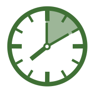
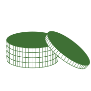
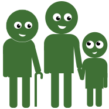

Vi är ett företag som värnar om alla människors rätt att ha tillgång till en anpassad och fungerande kollektivtrafik, och har därför tittat på vad vi kan göra för människor på landsbygden. Vi vill arbeta för att alla ska ha möjlighet att åka kollektivt på ett smidigt och riskfritt vis utefter deras egna behov. I vår framtagning av detta koncept har flexibilitet, effektivitet, säkerhet och nollvision varit i fokus.
Film om interaktiva busshållplatser
Vår vision
Ökad säkerhet.
Bristfällig belysning vid busshållplatser är ett säkerhetsproblem, speciellt vintertid. Ibland ligger busshållplatserna på landsvägar där bilarna kör i hög hastighet och där det ligger på passageraren att mer eller mindre gå ut i vägen för att signalera sin närvaro. Genom att ha ett belysningssystem som går i gång när resenärer inväntar bussen, lyser man upp området och ökar säkerheten. Trafikverket har nollvision när det kommer till dödsfall i trafiken, och interaktiva busshållplatser kan hjälpa till i den riktningen.
Ökad flexibilitet.
Busschaufförer får via det interaktiva busshållplatserna i förväg information om var bussen behöver plocka upp resenärer längst med sträckan. Vissa avgångar tar sträckan längre tid, andra mindre, beroende på hur många busshållplatser som är aktiverade. Detta gör tidtabellen flexibel. Att ha en flexibel busstabell där bussarnas planerade stopp inte följer ett minutschema är inte ett problem, eftersom passagerare enkelt kan följa bussens position i applikationen och anpassa sitt resande efter bussarna i realtid.
Utmana bilen.
Genom att erbjuda fler hållplatser kan fler människor få möjlighet att lämna bilen hemma. Vi lever i en värld där minsta satsning bör ha en klimat-smart plan för att bidra i kampen om att uppnå de klimatmål som satts upp av både regeringen, FN och EU. Har man en fungerande infrastruktur anpassad efter människors behov, attraherar det fler passagerare som kan välja att lämna bilen hemma. Applikationen räknar ut hur mycket en resenär sparar in på koldioxidutsläpp genom att välja bussen framför bilen.
Ekonomisk vinst.
Att investera i interaktiva busshållplatser på landsbygden har viktig ekonomisk aspekt som ger bussbolagen ett fantastiskt statistiskt underlag baserat på när och vem som åker buss samt varifrån. Detta gör det lättare att planera tidtabeller samt effektivisera kostnaderna för verksamheten. Genom att erbjuda en modern och flexibel kollektivtrafik, kommer fler människor att välja bussen, vilket snart resulterar i större intäkter.
Inkludera alla.
Interaktiva busshållplatser minskar diskrimineringen av glesbygdsbor som faller offer för den stramare bränslepolitik vi har med höjda bränsleskatter och bensinpriser. Dessa politiska beslut resulterar i att många inte vill, kan eller har råd att köra bil mellan arbete, hem, aktiviteter och ärenden. Många kan därför inte kan bo kvar på landsbygden eller behålla sitt jobb, då inga anpassade alternativ finns tillgängliga. Men Pointer vill inkludera alla grupper genom att erbjuda interaktiva busshållplatser som lösning på det problemet.
